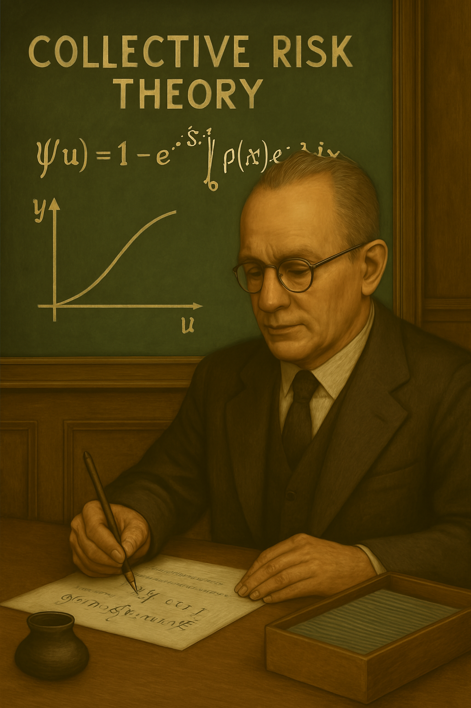
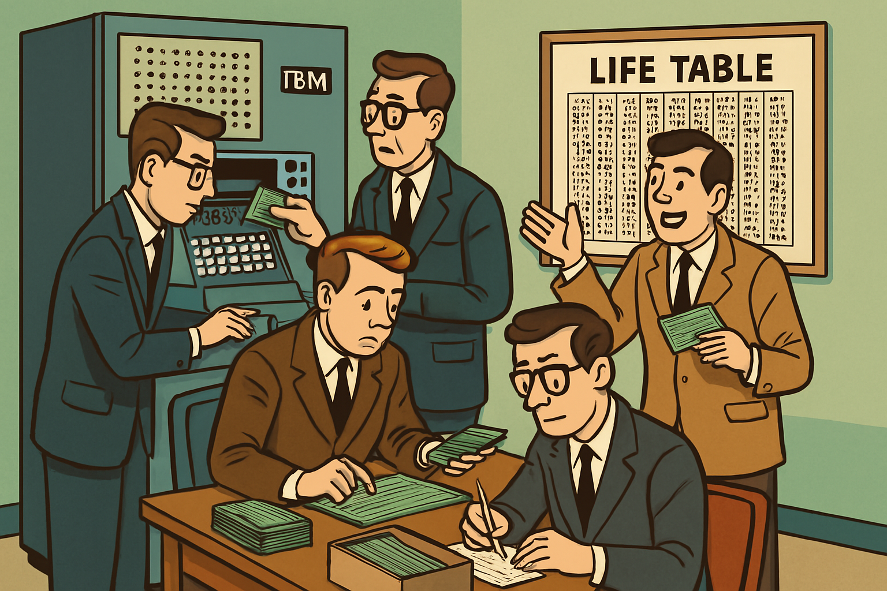

챕터 7: 20세기 – 디지털 혁명
20세기는 세계 대전과 경제 위기로 위험(생명, 재산, 경제)이 폭증한 시기입니다. 보험계리학은 통계 모델을 발전시키고 컴퓨터를 활용하여 복잡한 계산을 처리하였습니다. 단순 사망률 계산에서 금융 리스크로 확장되었습니다.
The 20th century was a period marked by world wars and economic crises, leading to a surge in risks (life, property, and economic). Actuarial science advanced statistical models and utilized computers to handle complex calculations, expanding from simple mortality calculations to financial risks.
Cramér의 집단 위험 이론(Cramér’s Collective Risk Theory)
1930년 하랄드 크라머의 집단 위험 이론은 보험사의 파산 위험을 모델링하였습니다. 이는 손해보험의 확률적 기반을 마련하며, 세계 대공황 시대에 안정성을 높였습니다.
Harald Cramér’s collective risk theory in 1930 modeled the bankruptcy risk of insurance companies. This provided a probabilistic foundation for property insurance and enhanced stability during the Great Depression era.
그림 7.2: Cramér의 집단 위험 이론, 1930
미국 사회보장법(U.S. Social Security Act)
1935년 미국 사회보장법은 공적 연금과 실업 보험을 도입하였습니다. 보험계리사들이 사망률과 경제 변수를 예측하여 시스템을 설계하였습니다.
The U.S. Social Security Act of 1935 introduced public pensions and unemployment insurance. Actuaries designed the system by predicting mortality and economic variables.
Society of Actuaries와 Casualty Actuarial Society
1949년 Society of Actuaries(SOA)는 American Actuarial Society와 Actuarial Society of America의 합병으로 설립되었습니다. SOA는 주로 생명보험, 건강보험, 연금 분야의 전문성을 강화했으며, 그룹 보험과 사회보장제도에 대한 계리 지원도 확대하였습니다.
Casualty Actuarial Society(CAS)는 1914년에 설립되어 현재까지 손해보험 분야에서 별도 기관으로 운영되고 있습니다.
The Society of Actuaries (SOA), established in 1949 through the merger of the American Actuarial Society and the Actuarial Society of America, strengthened expertise primarily in life insurance, health insurance, and pensions, while also expanding actuarial support for group insurance and social security systems.
The Casualty Actuarial Society (CAS), founded in 1914, continues to operate as a separate entity in the property insurance field.
컴퓨터 도입과 모델 발전(Computer Adoption and Model Advancement)
1950~1960년대 컴퓨터 도입은 IBM 기기를 통해 복잡한 생명표와 시뮬레이션을 자동화하였습니다. 이는 pension funds와 투자 모델의 발전을 촉진하였습니다.
The introduction of computers in the 1950s and 1960s, using IBM machines, automated complex life tables and simulations, promoting the development of pension funds and investment models.
그림 7.1: 컴퓨터로 생명표 계산, 1950s
Stochastic Models과 글로벌화(Stochastic Models and Globalization)
1980년대 확률론 모델 통합은 stochastic actuarial models을 주류화하였습니다. Black-Scholes 모델 적용으로 asset-liability management(ALM)가 발전하였습니다.
1895~1995년 International Actuarial Association(IAA)의 100년 활동은 국제 협력을 주도하여 글로벌 표준을 강화하였습니다.
The integration of probability models in the 1980s mainstreamed stochastic actuarial models. The application of the Black-Scholes model advanced asset-liability management (ALM).
The International Actuarial Association (IAA) led international cooperation over its 100 years from 1895 to 1995, strengthening global standards.
이 시기의 공통 테마는 기술과 글로벌화입니다. 보험계리학은 금융, 연금, 건강 보험으로 확장되었습니다.
The common theme of this period is technology and globalization. Actuarial science expanded into finance, pensions, and health insurance.
요약 테이블(Summary)
| 연도 | 주요 제도/사건 | 설명 | 보험계리학과의 연관성 |
|---|---|---|---|
| 1930 | Cramér의 집단 위험 이론 | 파산 위험 모델링, 손해보험 분석 | 손해보험의 확률적 기반 마련, 파산 방지 |
| 1935 | 미국 사회보장법 | 공적 연금 도입, 경제 변수 예측 | 사회 보험의 계리적 설계, 공공 복지 지원 |
| 1949 | Society of Actuaries 설립 | 전문 기관 합병, 그룹 보험 지원 | 교육과 연구 강화, 산업 확대 |
| 1950s-1960s | 컴퓨터 도입 | 자동화 계산, pension funds 발전 | 생명표와 시뮬레이션 혁명, 투자 모델 |
| 1980s | Stochastic models 통합 | 금융 리스크 모델, ALM 발전 | ALM과 투자 보험계리학 부상, 확률적 예측 |
| 1895-1995 | IAA의 100년 활동 | 국제 협력, 표준 강화 | 글로벌 표준화, 협력 촉진 |
출처(References)
- Cramér, H. (1930). On the Mathematical Theory of Risk. Skandia Insurance Company.
- Social Security Act (1935). U.S. Congress.
- Society of Actuaries (1949). Founding Documents. SOA Archives.